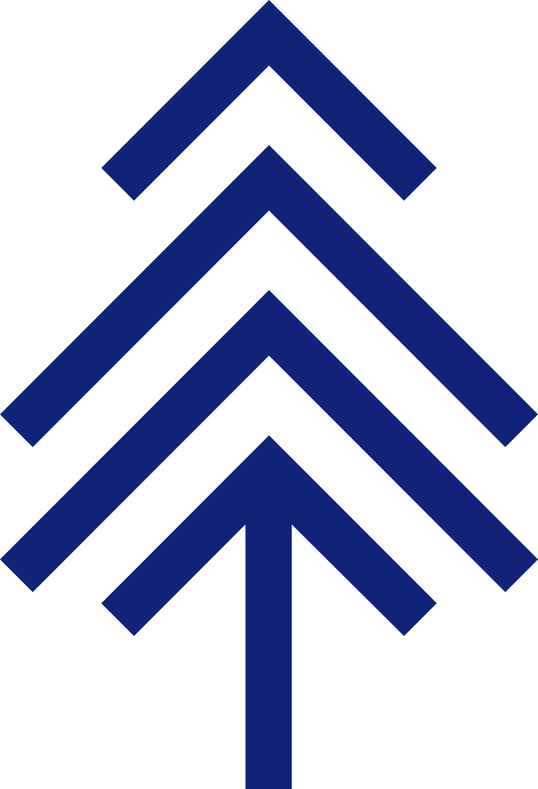

CascadiaJS 2027Call for
Presenters
Share what you’re building on the web and with AI.
June 7–8, 2027 · Seattle, WA
CFP closes Jan 10
cfp.cascadiajs.com

CascadiaJS 2027Share what you’re building on the web and with AI.
cfp.cascadiajs.com